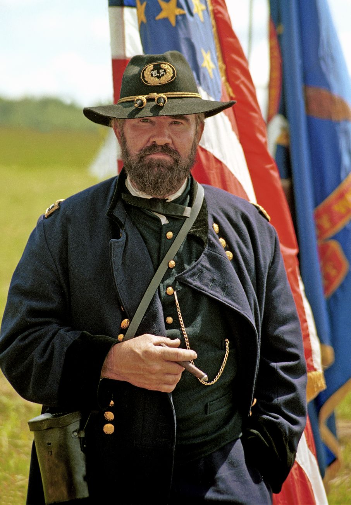

Season 1, Episode 1 — The Cast of Characters

The first Union officer killed by Confederate fire in the Civil War was a West Pointer named John H. Rodgers — shot by a cannon crew commanded by his own former artillery instructor at West Point. The war didn't start with strangers. It started with classmates.
Before we meet the cast, here are the five arcs that turn the Civil War from a textbook dates-and-battles slog into a reunion-gone-wrong drama. Each arc is a relationship — and once you know them, you'll see the war differently.
George B. McClellan and A.P. Hill were roommates and best friends at West Point. Then they both fell in love with Ellen Marcy. She chose McClellan. Hill never forgave him. Years later, at the Battle of Antietam — the bloodiest single day in American history — Hill's Confederate division arrived at the critical moment and smashed into McClellan's Union army. The timing was no accident. It was personal.
Before the war, Ulysses S. Grant and James Longstreet were close friends. Longstreet was best man at Grant's wedding. During the war, they became enemies. After the war, they reconciled — Grant put Longstreet on a pardon list even though Longstreet refused to ask for one. Longstreet became the only Confederate general to publicly accept Black suffrage and join the Republican Party, destroying his reputation in the South. He did it partly for Grant.
Lewis Armistead and Winfield Scott Hancock served together in California before the war. When the war came, Armistead went South. Hancock stayed North. At Gettysburg, they met again — as enemies. Armistead led the famous Pickett's Charge directly into Hancock's position. He died with his hand on a Union cannon, surrounded by Hancock's men. His dying wish: to see his old friend one more time.
Robert E. Lee and Joseph E. Johnston were classmates (Class of 1829). Jefferson Davis (Class of 1828) was one year ahead. Davis trusted Lee completely but despised Johnston — and the feeling was mutual. The feud may have started over a woman at West Point, or over Davis's actions as Secretary of War. Either way, it crippled the Confederate command. Grant considered Johnston "one of the most competent Southern generals," but Davis sidelined him.
The cavalry commanders formed their own little club. Tom Rosser (CSA) and George Custer (USA) were close friends at West Point — Custer once saved Rosser from drowning. During the war they fought each other in the Shenandoah Valley. After the war, Rosser worked for the railroad — and rehired Custer after he was fired from the same company. Also in this web: John Pelham (the "Gallant Pelham" of the Confederacy), killed at 24, and Wesley Merritt (Union), who outlived them all.

Now that you know the drama, here are the players. Think of this as the opening credits of a TV show — the classes, the cliques, the rivalries that will drive our story.
If West Point had a reality show, this class would be the main cast. Fifty-nine cadets graduated in 1846, right as the Mexican-American War began. Twenty-two of them became generals (12 Union, 10 Confederate). The class produced:
Also in this class: Union generals Darius Couch, Jesse Reno, George Stoneman, and Confederate generals Cadmus Wilcox and David Rumph Jones. Twenty-two generals from one class of 59 — it's almost absurd.
Spoiler: At Gettysburg, Armistead led a charge directly at Hancock's position. He was shot, and his dying words were to ask for his old friend. We'll get to this in a future lesson.
Before we go further, here are the must-know numbers that make the West Point story concrete:
| Stat | Number |
|---|---|
| Total West Pointers who served in the Civil War | ~680 |
| West Pointers who became generals | ~300 (~150 Union, ~150 Confederate) |
| Grant's class rank (Class of 1843) | 21st of 39 |
| Lee's class rank (Class of 1829) | 2nd of 46 — zero demerits in 4 years |
| Class of 1846: 59 cadets → generals | 22 generals (12 Union, 10 Confederate) |
Think about that last number: 22 generals from one class of 59. That's a 37% general rate. By comparison, of the ~37,000 cadets who have graduated from West Point since 1802, only about 0.5% have ever made general. The Class of 1846 was an anomaly that changed history.
The West Point network created three things that make the Civil War unique:
One more thing about names: Stonewall Jackson's nickname — one of the most famous in American history — may have been an insult, not a compliment. At the First Battle of Bull Run, General Barnard Bee was trying to rally his brigade and reportedly pointed at Jackson's men and said, "There stands Jackson like a stone wall!" But Bee was angry — Jackson hadn't moved to support him. The "compliment" reading came later. The truth? We're not sure. But it's worth knowing that even the most famous nicknames aren't what they seem.
How this works: Work through each phase in order. Don't scroll ahead to the answers.
Which one does NOT belong?
Cover the answers below. For each clue, respond in the form of "Who is…" or "What is…". Answers are at the bottom of this page.
Skip — this is Module 1, Lesson 1. No previous episode to recall.
Answers (Phase 2):
You now have the program for the series. Next time, we'll go back to the beginning — a teenager named Hiram Ulysses Grant arriving at West Point, hating every minute of it, and accidentally meeting 50 future generals along the way.
You don't need to memorize all these names — we'll return to them one by one. But if one of these arcs caught your attention, say so — that's where we'll go next.
If this hooked you, the best single book on this topic is John C. Waugh's The Class of 1846: From West Point to Appomattox. It won the Fletcher Pratt Award for best nonfiction Civil War book of 1994, and Stephen Ambrose called it "a wonderful saga."
Want something shorter? Elizabeth D. Samet's article "The Key Way West Point Prepared Ulysses S. Grant for the Civil War" is a great 10-minute read by a West Point professor.
→ Full Glossary for quick reference to any names or terms.
→ Full Syllabus — see where this lesson fits in the course.
→ Have questions? Things you want me to explain better? A relationship arc you want to dive deeper into? Just ask — I'm your teacher.